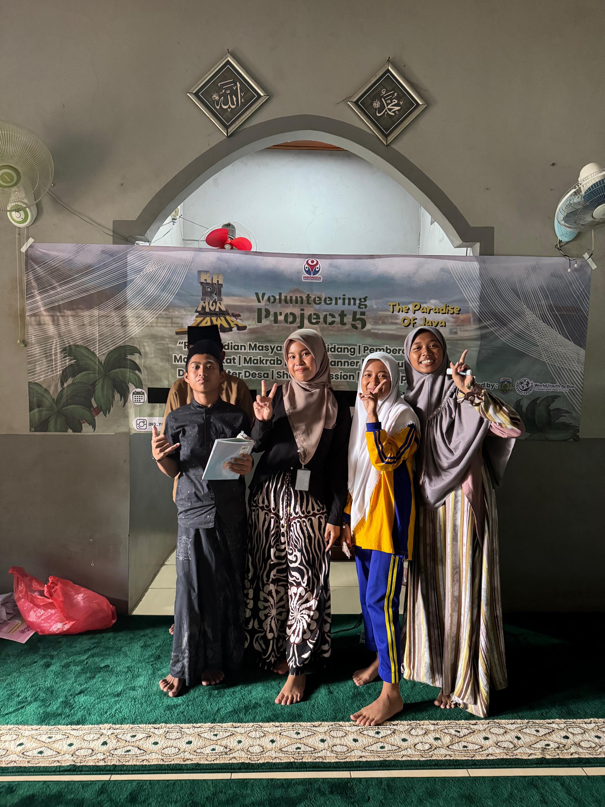
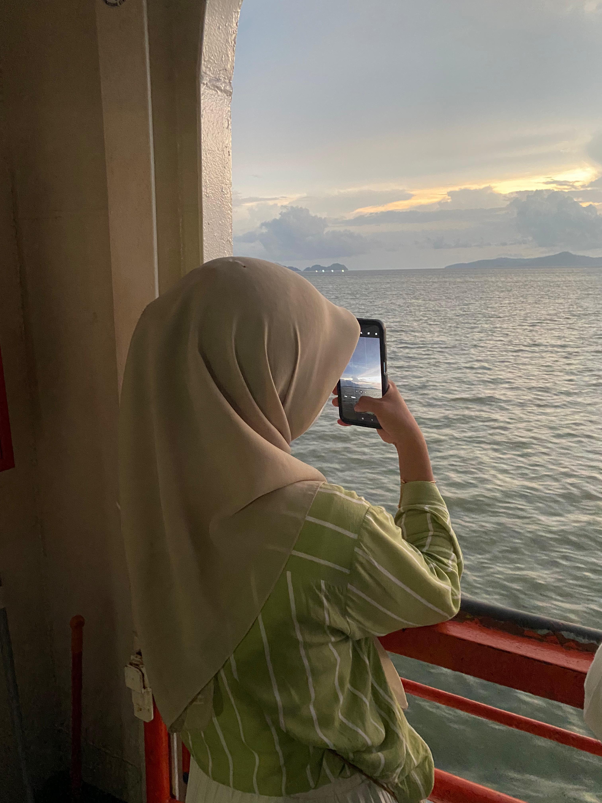
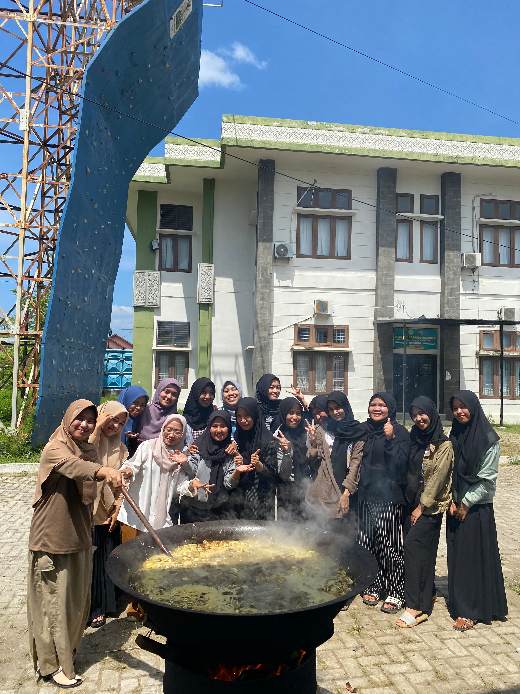

Blog

Tips & Trik Lolos Fully Funded Volunteer
Temukan berbagai tips dan trik untuk membantu Anda lolos seleksi volunteer.
Read More
4 hal yang harus dihindari saat wawancara beasiswa
Kesalahan umum saat wawancara beasiswa dan cara menghindarinya.
Read More

Rekomendasi Pantai untuk Sunsetan di Aceh
Nikmati keindahan senja yang memukau di Aceh dengan rekomendasi pantai-pantai terbaik untuk menikmati momen sunset yang tak terlupakan.
Read More

Tradisi Meugang di Aceh Menyambut Ramadhan
Mengupas makna dan keunikan Meugang, di mana masyarakat Aceh merayakan dengan menyajikan hidangan istimewa.
Read More